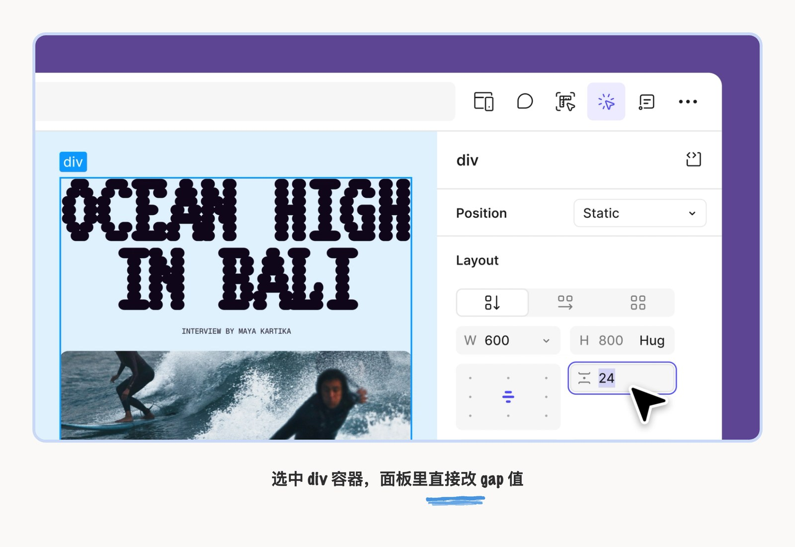
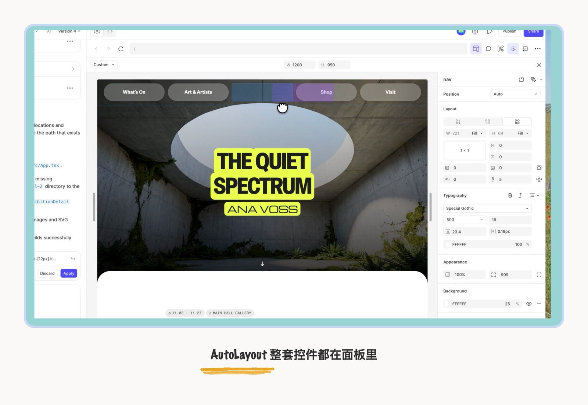
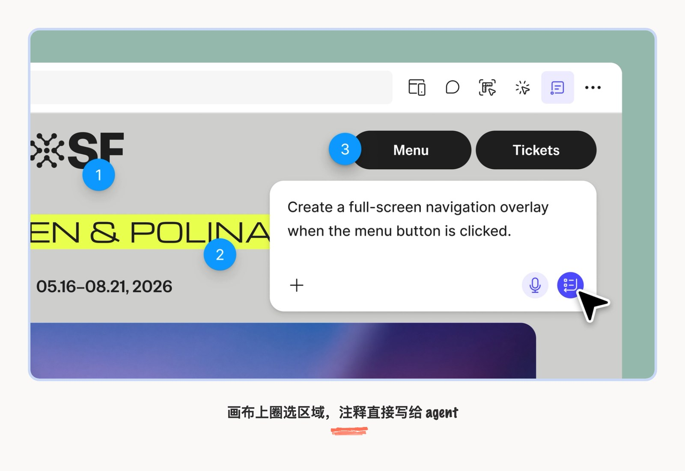
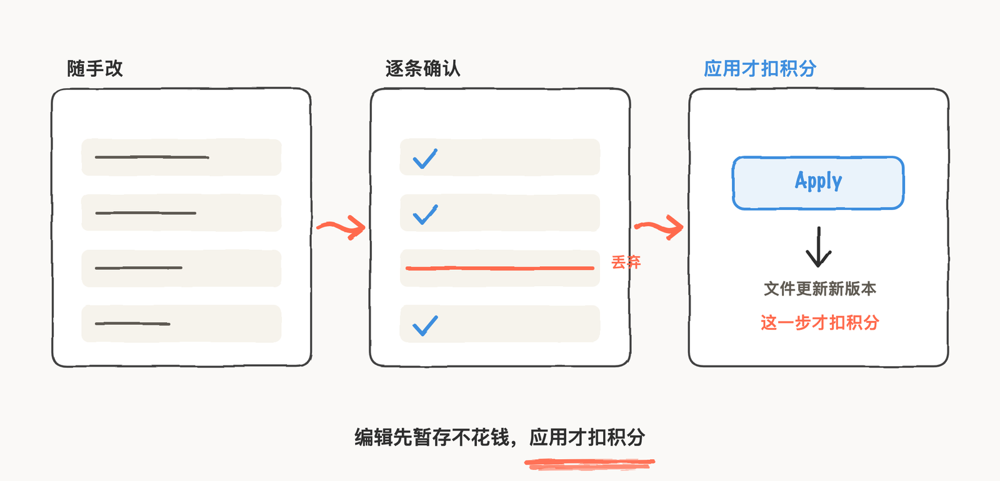
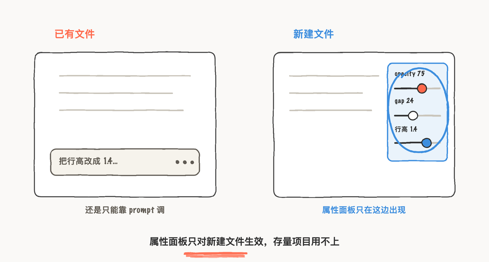

Figma make 是 AI 时代早期加入 AI 提示词生成 UI 的设计工具，但后续进度有点慢了，那些在 design 模式下的工具面板、 AutoLayout 这些可视化的便捷操作，始终没有并入到 AI coding 中，一种 UI 元素是极其僵硬的原始感觉，怎么还没进化的期待感。相对来说 cursor 早早支持的 design mode 属性面板可以详细编辑调整视觉样式，在设计工具这一条线是走得更快的，Figma 作为前沿设计软件居然没有这种交互。
大部分 design Agent 工具一直在解决 Prompt 做不到指哪改哪的精确控制问题，是因为这类工具的用户画像是 UI设计师、UX 设计师、Motion 设计师群体本身都是细节控，都有精确到像素点的习惯，自然就希望每个元素都必须能自己掌控。
这次，Figma make 终于赶上来了。7 月 30 日 Figma 更新了 Make 编辑器，把 Design 里那个面板加进来了，同时还有AutoLayout、点哪改哪的 Agent。
增加属性面板进行精确编辑
延续 design 模式下的调参习惯，直接给 Make 加上精确的操作目标，省掉了文字 prompt 需要的搜索和猜测。具体操作是右上角工具栏点 "Edit"，右侧弹出面板上都是常见参数操作方式和 Figma Design 里基本一样。并且从代码角度，视觉上构建的内容和实际发布的内容一样。

画布上的 AutoLayout 也一起搬进来了。这是我最惊呼的一个功能！AI 时代怎么能抛弃手搓手艺呢？比如选中一个 nav 容器，Position 直接给到 Auto，排布方向、间距、padding 逐项可调，宽高能选 Fill 或 Hug，往下还有 Typography 和 Background 这些分组，字体、字号、行距、透明度都是 Design 里熟悉的那套控件。设计师在 Design 里养成的布局手感，到 Make 里不用重新学一遍。

还有一个新功能是标注功能。在工具栏选 "Annotate for agent"，直接在画布上选择区域 prompt 式交互，比如 "hover 时缩略图微微放大、松手恢复，动效采用 ease out"，agent 就能读取标记的精确位置修改元素。这种做法

Design 的使用习惯
解决 Prompt 做不到指哪改哪的精确控制问题
Figma Make 从上线以来一直是纯 prompt 驱动：文字描述要改什么，agent 把改动写进代码。类似 opacity 从 80 调到 75、行高从 1.5 改到 1.4，这种精确到具体数字的微调是想路径是这样：先在代码里搜索定位是哪个元素，再改数值，有时候意图模糊时还得猜到底是多少，这种细节调整明显手搓比让 agent 跑一轮更快更准。
先暂存后扣分把试错和消费拆开了
属性面板和注释做的编辑不是一改就生效的。每一条编辑先暂存到 prompt box 里，你可以逐条过一遍，不想要的随手丢掉，确认了再点应用。Make 这时候才把改动写进底层代码，文件更新到一个新版本。积分在应用这一步才扣，暂存状态完全不花钱。
随便拖、随便调都行，拖 10 次只扣最后确认的那 1 次。Phillip Wang 说每次编辑比 prompt 描述同一个改动省得多的 token 也更快，省 token 是真的，因为直接操作给了 agent 精确目标不用搜索；但我觉得更省的其实是试错的钱，prompt 方式下每一轮尝试都在烧积分，暂存机制把试探和落地拆成了两件事。
【补充亲历：用属性面板暂存或丢弃几轮后的真实体感，比如调了几次丢弃过几条以及最后一次性 apply 时的感受】
大部分 AI 工具每次交互都消耗 token，用户本能地会控制发送次数，怕一句 prompt 没说清楚白烧一轮。Figma 官方之前提到用户社区在讨论 "tokenmaxxing"，怎么用最少积分干最多事，还专门出了 7 条省积分的实践。Make 这回的暂存机制正好回应了这个焦虑：探索免费，落地收费。逻辑上跟 Git 的 staging area 差不多，先 stage 再 review 再 commit，commit 才消耗资源。对 AI 驱动的工具来说，"看清楚再确认" 比 "发出去等结果" 心理压力小很多，这个设计我觉得比属性面板本身更值得注意。

只对新文件生效挡住了所有存量项目
属性面板有个限制，博客末尾提了一句：只对新建的 Make designs 生效，之前创建的设计继续用旧编辑工具。
这个限制比听起来硬。你在 Make 里做的项目已经迭代好几版了，想用属性面板微调间距，不行，得新建文件从头来。存量项目要么接受继续靠 prompt 调参数，要么把内容搬到新文件重新开始，正在进行中的项目基本和属性面板无关。
【补充亲历：拿一个已有的 Make 项目试过属性面板是否可用以及新建文件试用后的对比感受】
另一个限制是面板目前只认代码库里已定义好的 color 和 typography tokens，不能从面板直接新增。Figma 说 Code Connect 即将上线，到时候 Figma Design 里的 components 可以链接进 Make，设计系统的资产也就有望在 AI 编辑器里调用了。但现在还没到那一步。

Figma 过去几周在 Make 编辑器上一版接一版地补能力，之前加了 code layers，这次是属性面板和注释，Code Connect 也排在后面。纯 prompt 驱动不够用这件事 Figma 自己很清楚，正在一块一块把传统设计工具的能力搬进 AI 编辑器。搬的速度不慢，但旧文件被卡在了外面，想用新功能就得从新文件开始，这个迁移成本 Figma 还没给解法。
本文功能说明与界面截图来自 Figma 官方博客 A Properties Panel and Annotations, Now in Figma Make；其余配图为本人手绘信息图。